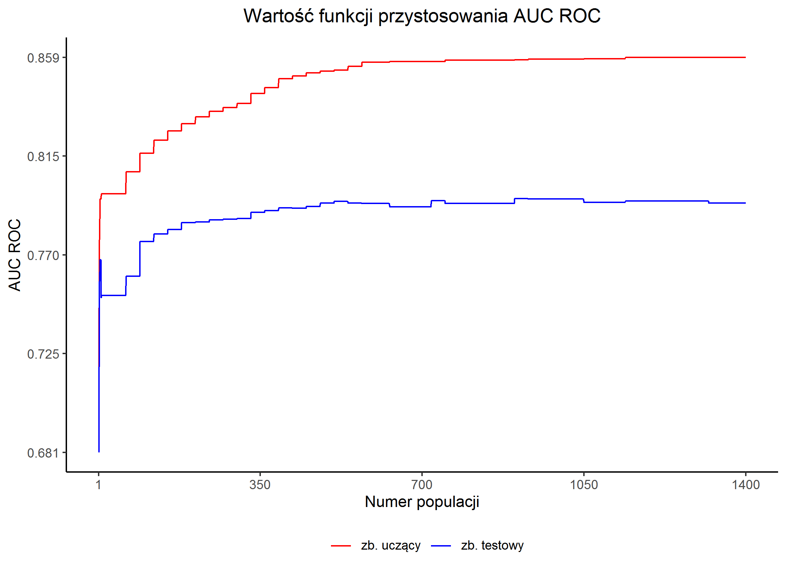
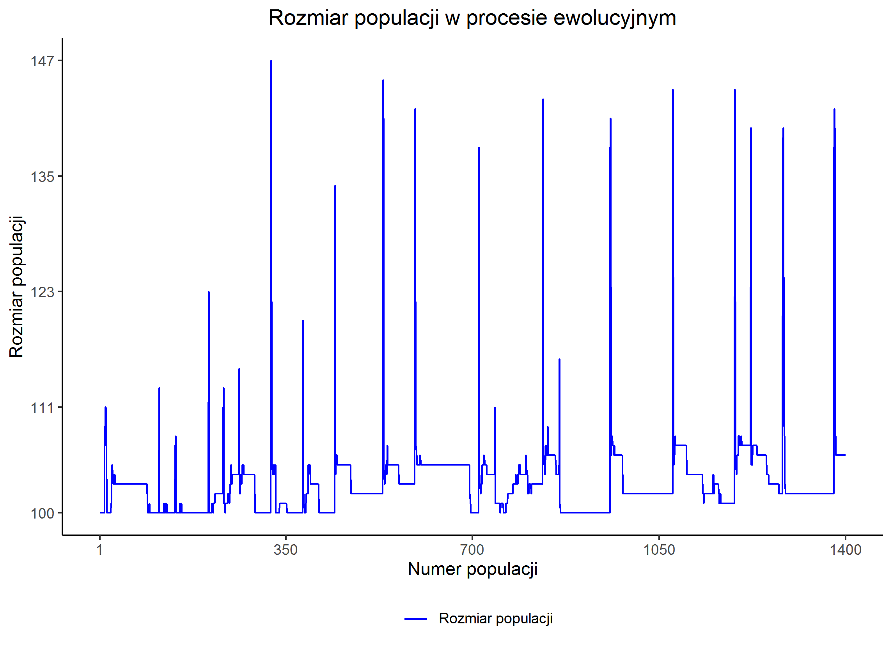
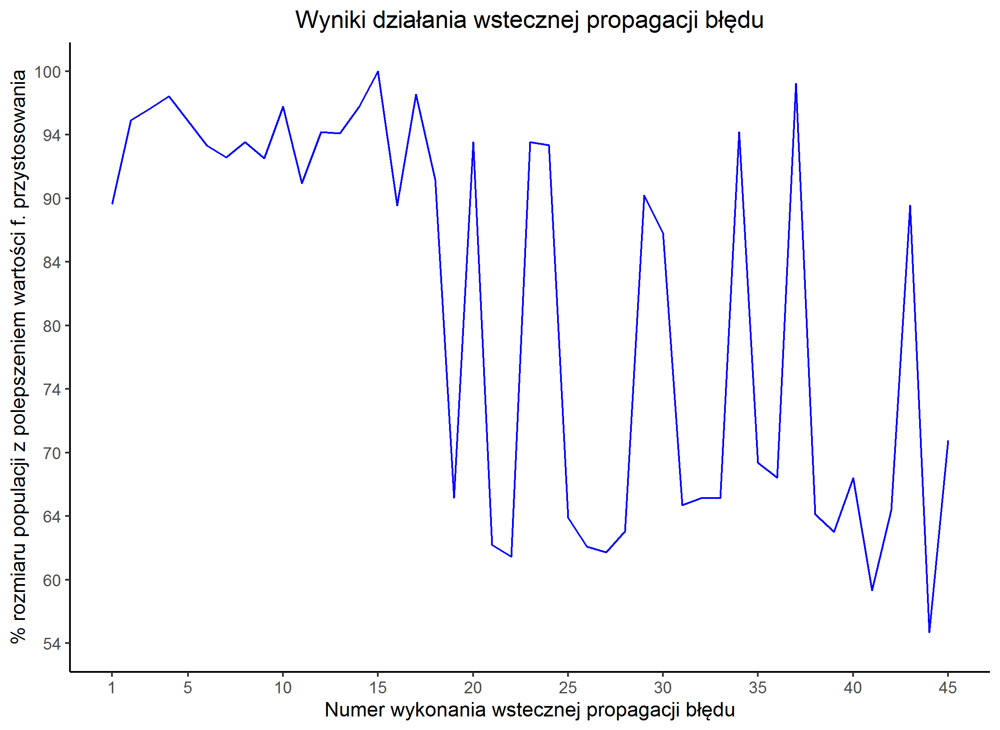
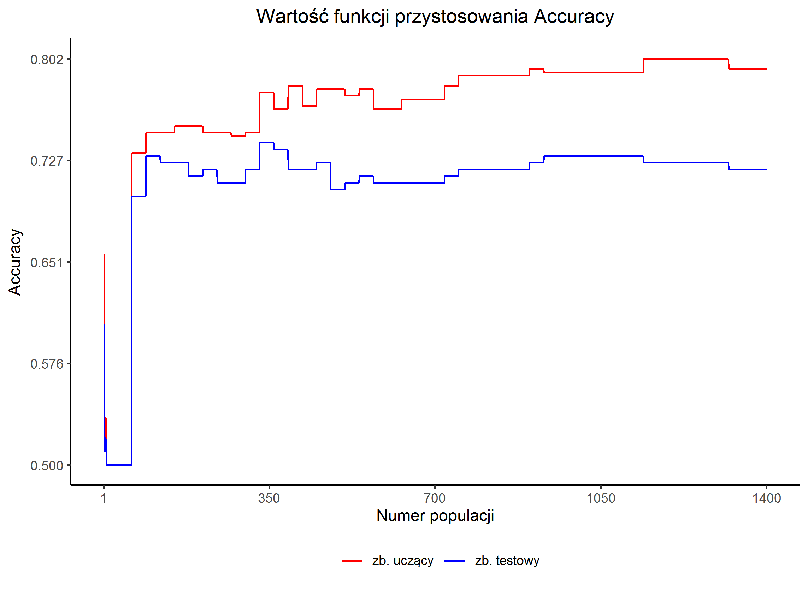
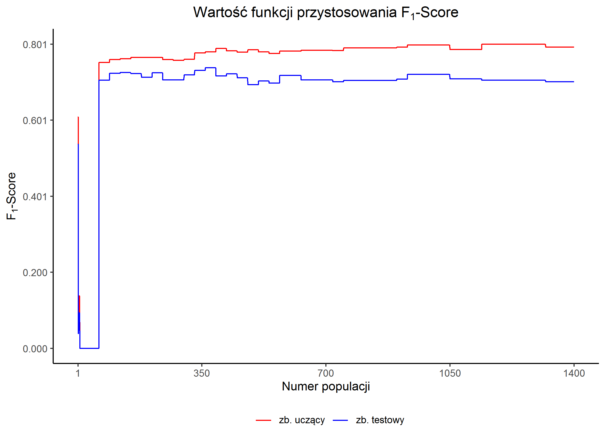
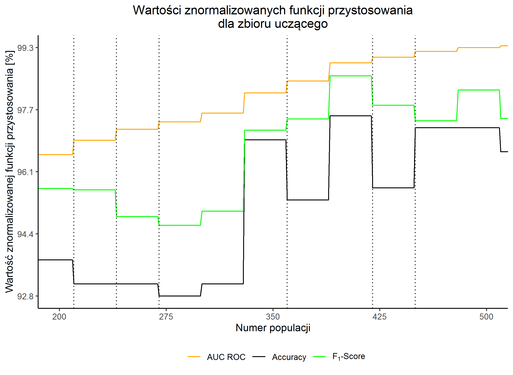

Eksperyment
Eksperyment nr 1
5.1 Maksymalizacja pola pod krzywą ROC dla German Credit Data
Opis eksperymentu
| Konfiguracja | konfiguracja |
|---|---|
| Rozdział rozprawy | 5.1 Maksymalizacja pola pod krzywą ROC dla German Credit Data |
| Zbiór danych | German Credit Data |
| Liczba obserwacji | zbiór uczący: 400 zbiór testowy: 200 |
| Liczba epok | 1400 |
| Kryterium | AUC ROC |
| Ziarno generatora liczb losowych | skrypt przygotowujący dane: 2357 eksperyment: 3771 |
| Wybrana kompromisowa sieć neuronowa | Epoka uzyskania osobnika: 900 |
Oceny
Na zbiorze uczącym
- Trafność
- 0,79500
- F1-Score
- 0,79293
- AUC ROC
- 0,85821(*)
Na zbiorze testowym
- Trafność
- 0,72500
- F1-Score
- 0,70899
- AUC ROC
- 0,79550 (*)
Rysunki





